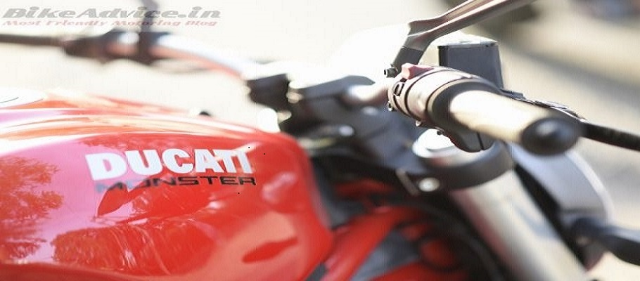

If you have been around motorcycles lately, or, to be specific, have witnessed and/or been a part of useless bike-banter in recent times, you might have noticed how words like hooligan, beast, pocket-rocket, etc., are being increasingly, and loosely, used to describe every second motorcycle that is quicker than, say, an RE Bullet. It is another matter altogether that even if you replace the word second with other in the previous sentence, the statement would still probably be correct. So, logically, if one of the slowest (or THE slowest?) motorcycles ever produced by man can still be called a bullet, the masses then certainly have all the right to write Tomahawk on the fly-screens of their 125 cc commuters. Between the cheap neon pilot lamps. But, some nomenclatures are almost sacred. Irreverence towards them would not win you genuine friends. Genuine motorcyclist friends, I mean. For example, if you turn up on a Pulsar with a loud exhaust, I (one of the aforementioned God-sent motorcyclist friends in your life) might just ask you, out of concern for your well-being, if you were okay… But, if you chose to simultaneously paint the tank red and put Monster stickers on it, I see myself pulling a stoppie; taking a U-turn, and wheelieing off from the place that even has a whiff of that cheap paint or your even cheaper deodorant around it. Trust me, despite my elementary skills in bike-stunts, I will be running away from you quicker than a gold-digger leaving her boyfriend in the latters misery.
Point is, you just dont disrespect a legendary moniker. Especially one, whose etymology, in the context of two wheels, can be traced back to 1993, when the first Ducati Monster, the M900, was born. Yes, the Triumph Speed Triple, incorrectly considered to be the first super-naked / street fighter, came later in 1994. So, again, for one last time, please dont refer to your re-jetted, K and N equipped, Pulsar 180 as a Monster. No, not even as an adjective. The only other thing that makes my eyes and ears bleed even more is seeing/hearing words like car-porn, bike-porn, food-porn, eargasm, etc., being used to describe anything in the superlative. But that is a topic for some other day… Let us focus on the Monster for now.
This Ducati Monster, the 821, has replaced both the 796 and 795 Monsters, which used to be the entry level Ducatis until last year. But the new Monster is not your lowest ticket to the Ducati world anymore. That place has been taken by the nifty Scrambler now, which is keeping the accounts department of the Bologna based company happier than ever before. So, the Italians sure know what they are doing. But, the main question, for you and I, is, whether the Monsters raise in rank has come only due to seniority or has its CV actually seen a proportionate addition in skills to justify that promotion Dont worry, you wont have to wait until the end to get the answer, which happens to be a resounding YES,the Monster 821 is enormously better than the bikes it replaces. And that is saying something as both the 796 and 795 were brilliant machines.
I can say that with authority as the arrival of our media bike was preceded by my friend, Jasmeet Singh, collecting a spectacularly unused 795 from a celebrity (a prominent sportsman) who had not even put three digits on the odo. Naturally, while Jasmeet was more than eager to break-in his new pride and joy under the blessings of the bigger Monster, I was just too elated at getting the opportunity to ride both the bikes back-to-back to get a better perspective. Another offshoot of sampling both simultaneously was that I could get real time feedback from my taller (and heavier) friend on how well the ergonomics suited larger riders on the new bike. And he didnot disappoint. Jasmeet could immediately notice that the handlebar on the 821 was easier to reach; the seat was more accommodating of larger derrieres (sorry Jas, you said so yourself), and that the 821 felt a lot more substantial than his 795 without feeling unwieldy.
I sat on the 795 and immediately loved it because it just felt custom-made for my five-foot-something frame On the move as well, it showed all the fine Ducati traits of agile handling, spirited acceleration, and a firm yet unjarring ride. But, switching back to the 821 immediately reiterated just how much better the new Monster had become in every sphere and dimension. To start with, the engine, though only 18 cc bigger than the previous Monsters (795 and 796), makes 25 horses more! Torque output of 89.4 Nm is also not just significantly better (by more than 10 Nm) than the discontinued Monsters, it is the best in segment. Yes, the bike is torquier than even the 898 cc Benelli which produces 85.6 Nm.
But, most importantly, while the 795 appealed more to shorter riders (the taller folks found it to be too tiny) the 821, in striking contrast, should be a perfect fit for everyone even beyond. Ducati has thoughtfully made the standard saddle adjustable for height.
It takes less than a minute to take the seat height from 810 mm (highest) to 785 mm (for perspective, the Yamaha YZF-R3s is 780 mm), and Ducati also offers not one but two more seats as options, the lowest of which stands just 745 mm off the ground. Even Tyrion would want to order one now, I reckon. No, seriously, a pat on Ducati back for providing this option as generally 98 per cent of big bikes require you to have an inseam rivalling Claudia Schiffer or Kareem Abdul Jabbar to flat foot on both sides.
And once you do swing a leg over, the 821 big fuel tank gives you a proper big bike feel, but without getting intimidating at any point. Its 17.5-litre capacity also ensures that your number of visits to the fuel station are fairly reduced under sensible riding. Now, Ducati says that the 821, with that tank filled up to 90 per cent, weighs 205.5 kg. That is light for the segment and, depending upon how hyperactive your right wrist is, you’ll be bringing that figure further down to 190s much too often… I would also like to mention here that the best value-for-money proposition in this segment, the Kawasaki Z800, weighs 229 kg. In fact, its weight and the tall, 834 mm, seat height, are two of the biggest reasons that contribute more to the Triumph Street Triples sales in India than the latters own shining highlights. And it is these two motorcycles, plus the Benelli TNT 899, that comprise the main competition for the Monster 821. By the way, the Benelli, at 231 kg, happens to be the heaviest in segment. Heck, even the featherweight 675 cc Street Triple weighs around 188 kg with all liquids. Still, these three are formidable machines, people, so just being better than the Monster 795 wont cut it for the new Ducati. Let us quickly see then if it has what it would take to make people look beyond the Z800 and the Street Triple.
It all starts with the looks, doesnt it The Monsters have always been fantastic lookers from day one, thanks to their less-is-better design theme. And the latest is no exception. The trademark trellis is still there, but it has gotten shorter and now bolts on directly to the cylinder heads. The single-sided swingarm has been ditched (the Monster 1200 has it though), which is a pity, but I welcome the omission of the fly-screen. Those miniature wind-deflectors are an eyesore on all naked bikes. You want protection from wind-blast Buy a faired bike. Thank you.
The instrument console is an LCD unit which, other than constantly showing you the speed, rpm, and the chosen ride mode, also tells you the current fuel consumption, average speed, average fuel consumption, engine coolant temperature, the weather forecast, and whether you will be getting lucky tonight.
The build quality is top notch, but I dont know if the previous tester used Scotch Brite to clean the bike or someone tried to intentionally (but unsuccessfully) peel off the decals, but a couple of tank stickers had started to come off when I went to pick up our test bike. However, since they didnot budge any further while the bike was with us, it tells me that it is not a quality issue and that someone might have been up to some mischief. Someone, perhaps from the species mentioned at the beginning of this story
Also, unlike the 795 and 796, where the big under-seat-but-jutting-out exhausts took away a lot from the compactness of the motorcycle, all visual mass in the 821 is where it should be in a motorcycle bang in the centre The Monster 821 is actually a study in how to make mass-centralisation look great in a motorcycle Or, vice versa The slash-cut exhausts are raised at just the right angle (perfectly parallel to the seats slant) and stop at just the right point try drawing an imaginary straight vertical line from the rear axle nut to the rear edge of the seat cowl, and you will see the line slicing through the joint where the exhaust tips meet, before touching the tail end. That is a perfectionist designer at work, ladies and gentlemen; hats off to him!
Also, unlike the 795 and 796, where the big under-seat-but-jutting-out exhausts took away a lot from the compactness of the motorcycle, all visual mass in the 821 is where it should be in a motorcycle bang in the centre The Monster 821 is actually a study in how to make mass-centralisation look great in a motorcycle Or, vice versa The slash-cut exhausts are raised at just the right angle (perfectly parallel to the seats slant) and stop at just the right point try drawing an imaginary straight vertical line from the rear axle nut to the rear edge of the seat cowl, and you will see the line slicing through the joint where the exhaust tips meet, before touching the tail end. That is a perfectionist designer at work, ladies and gentlemen; hats off to him!
But I didnot start in Sport mode where it makes the most power. As usual, I chose the least powerful mode to begin with. Ducati calls it the Urban mode. It still makes almost as much power (75 hp) as the detuned Street Triple (78.2 hp) that Triumph sells in India, but throttle response is toned down in this mode, while Traction Control and ABS are on High Alert to check any and every stupid move that you might make in urban (read chaotic) traffic. Imagine a Duke 390, but with a dull throttle response that is exactly how the bike feels in this mode. Great in rains and slippery conditions, but highly boring otherwise. I grew tired of it in the first ten minutes, and changed to Touring mode where all 112 horses are available, but still reined in by the aforementioned electronic nannies, though the leash is not as restraining as it is in Urban mode. Another half an hour in the saddle, and I just couldnot control the urge to shift it into Sport, where all electronics sit back with their hands folded behind their head and say, go have fun The BRRRRAAAAAPPP from the exhaust got way louder, which told me that I was now sitting on the Wild One. Massimo Bordi would approve
But, damn I was not prepared for THIS, the instantaneous, almost vicious, response from the ride by wire throttle, I mean. Whatever little hesitancy there was at low revs in Urban and Touring, it just vanished in Sport and the bike just flew right from the word go. And the pull just keeps getting stronger. I cannot even begin to think what the Monster 1200 would be like
I can assure you of one thing folks,after riding the 821 the way it is supposed to be ridden, you would never take anything lightly that is not a 200 bhp superbike. Ducati would do well to lock the Sport mode for the first couple of thousand kilometres for the new owners, especially the ones financed by daddy dearest. Or the bike manual can perhaps include a warning on the lines of, Choose Sport mode after consulting your insurance provider. The bike is so quick here that I feel it might be quicker than even some of the bigger and more powerful nakeds out there. I tried an informal, impromptu, acceleration run and you may check the raw clipping below where, despite a pathetic launch by me, the 821 still touched 100 km/h in four seconds, before taking another three to touch 145 km/h. A perfect launch by a better rider might see a 3.1-3.4 sec. 0-100 sprint The second video clip shows the top speed we managed to attain on this Ducati.
I just realized how pathetic the quality of the second video has become (the first one is no good too, but you can at least follow the speedo readings) after editing. So I will just share a screenshot below of its top speed taken from the raw video.
And its not a bad city bike too In fact, its quite good at tackling our rubbish peak hour traffic. The light clutch and precise gearbox make moving along in bumper to bumper traffic a tireless affair, while steering lock is generous enough to facilitate tight U turns.
The 821, unlike the 796 and 795, is liquid-cooled and you wont get any prizes in guessing that it certainly runs cooler than its outgoing (pun unintended) aircooled brethren.
The 821, unlike the 796 and 795, is liquid cooled and you wont get any prizes in guessing that it certainly runs cooler than its outgoing (pun unintended) air cooled brethren.
You get all of this at INR 9.72 lakh (ex-showroom, Delhi/NCR) for the Monster 821 Dark (the all-black 821 basically, which does not get the rear seat cowl) variant, while the red number that we tested is dearer by 53 thousand rupees. The TNT 899, Z800, and Street Triple cost INR 9.48 lakh, 8.13 lakh, and 7.91 lakh, respectively (all prices are ex-showroom, Delhi) Their respective powertoweight ratios are 516 hp per tonne, 416 hp per tonne, and 486 hp per tonne. The Monster 821 A whopping 545 hp per tonne. It should be clear by now that the Ducati will beat the crap out of the other three on a drag strip. it would outhandle and outaccelerate them on a race track (the Triumph will keep it in sight here though, despite its power deficit) it would be easier than even the Street Triple to live with in the city, thanks to its adjustable seat height, a lot more power (can get you out of a sticky spot in a jiffy), and riding modes. And it will do all of that while still keeping you relatively safer than the other three, courtesy the comprehensive Ducati Safety Pack. The 24 months unlimited warranty and the insane, 15,000 km, service intervals are like the cherry on top. It is a different level, this motorcycle.